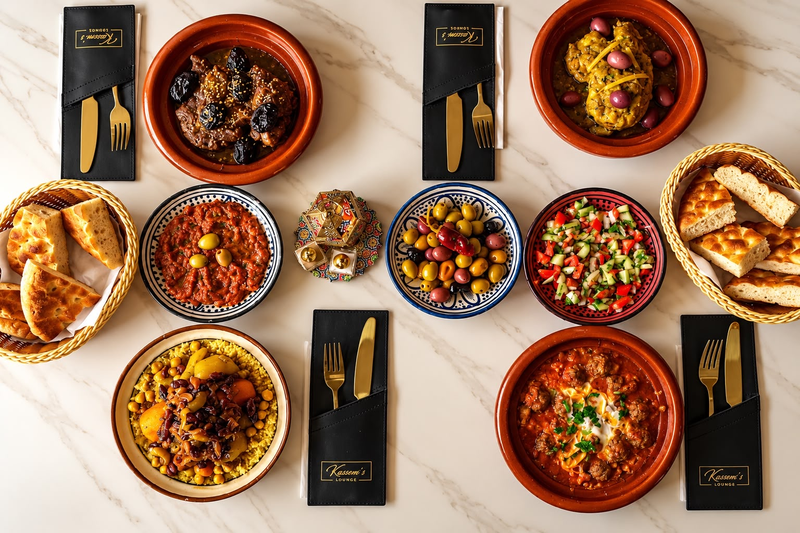
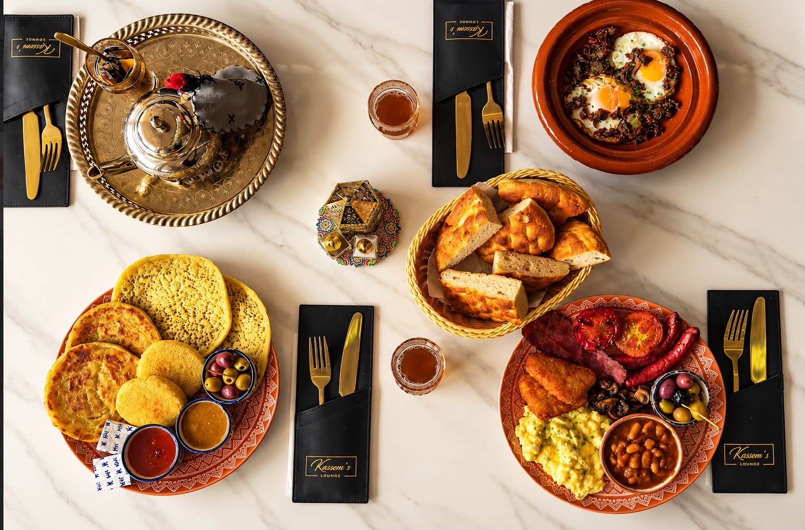
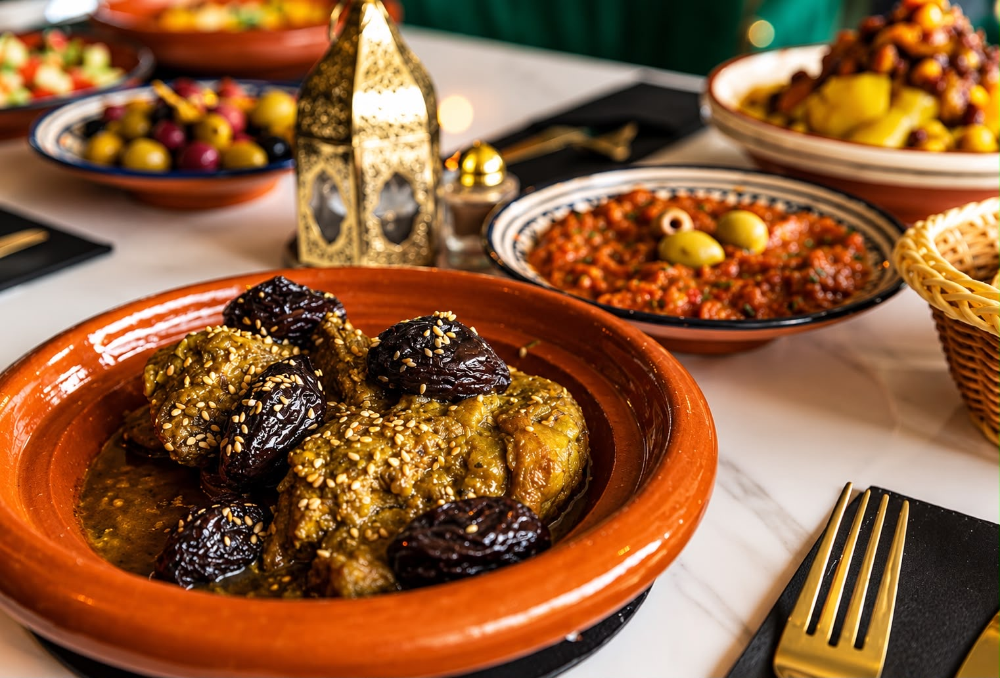
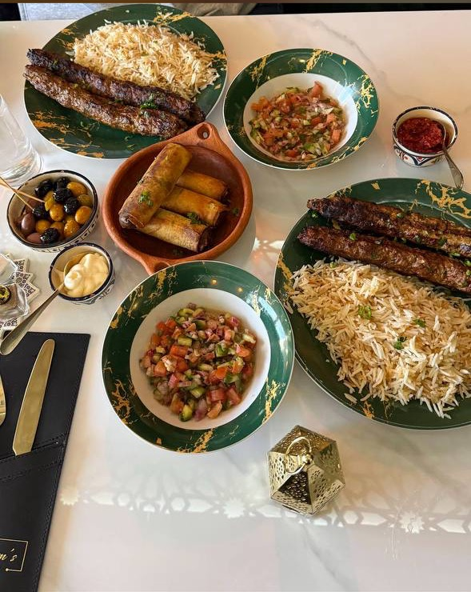
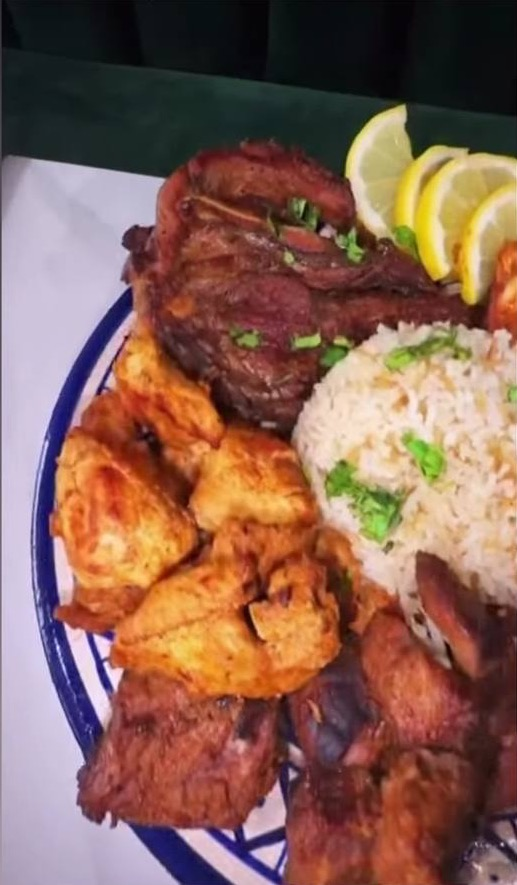
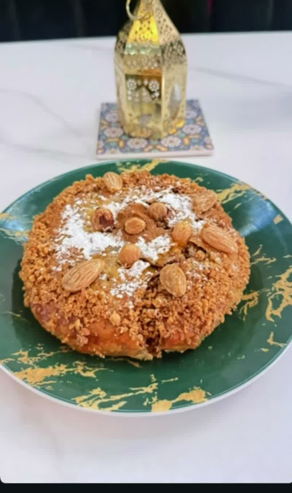
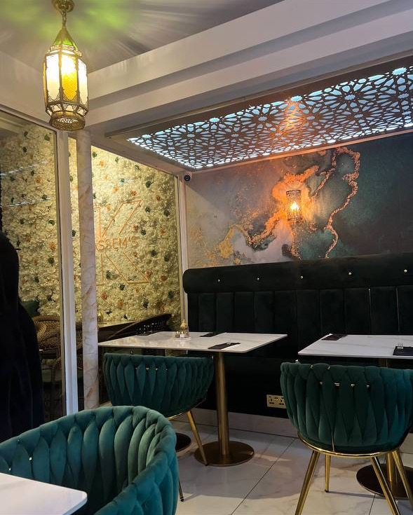

Tagines
- Lamb Tagineprunes, almonds, sesame
- Chicken Taginepreserved lemon, olives

Moroccan · family-run · Hemel Hempstead
Tagines left long over a low flame, lamb over charcoal, bread from the oven — and mint tea poured from a height, in a family-run Moroccan restaurant opposite the Water Gardens.
The carte
Tagines
From the charcoal
To begin, and to share
Sweet, and tea

Kassem's Lounge serves Moroccan and Mediterranean dishes in a small, welcoming spot on Waterhouse Street. The food is built around slow cooking, warm spices, fresh bread and generous hospitality.
Swipe →





Private catering & events
Whether you’re planning a private celebration, wedding, birthday, family gathering, corporate event or special occasion, Kassem’s Lounge can bring our Moroccan food and hospitality to you.
As a family-run restaurant, we love bringing people together over generous, flavourful food. Our catering menus can be tailored to your event, guest numbers, budget and dietary requirements, with options including Moroccan sharing dishes, tagines, couscous, grilled meats, salads and more.
We can offer collection, delivery or a full catering service with set-up and service, depending on your needs.
Planning an event? We’d love to cater for you.
Family tradition
The Google reviews tell a clear story: mum cooks from the kitchen, the family welcomes people in front of house, and the room feels personal from the moment you arrive.

Loved locally
4.9
Guests praise the Moroccan cooking and generous portions.
Google review theme
Warm hospitality comes up again and again.
Google review theme
Many visitors describe it as a hidden local gem.
Google review theme
Visit us
Bookings by phone
01442 954333 Kassem's LoungeOpening hours
Book a table
There is no online booking system — the family takes the booking. Fill this in and it writes you the sentence to say, then places the call.